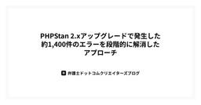
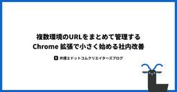

弁護士ドットコム株式会社 Creators’ blog
https://creators.bengo4.com/
弁護士ドットコムがエンジニア・デザイナーのサービス開発事例やデザイン活動を発信する公式ブログです。
フィード

判例要約のファインチューニングで学んだ「スコアが高い ≠ 品質が良い」という教訓 1
1
弁護士ドットコム株式会社 Creators’ blog
Legal Brain で開発に携わっている菅原です。 今回は判例の要約を自動生成するにあたり、ファインチューニングしたモデルが自動評価指標では圧勝したにもかかわらず、専門家による評価ではまったく異なる結果になった話を紹介します。 背景 実験設定 データ 比較モデル ファインチューニング設定 自動評価指標：ROUGE と BERTScore 自動評価の結果 専門家による評価 誤りのパターン分類 パターン 1: 条文番号の誤り パターン 2: 事実関係の捏造 パターン 3: 論点の欠落 Qwen (FT) の強み：形式の再現力 なぜスコアと品質が乖離したのか ROUGE・BERTScore の限…
3日前

PHPStan 2.xアップグレードで発生した約1,400件のエラーを段階的に解消したアプローチ
弁護士ドットコム株式会社 Creators’ blog
TL;DR PHPStan を 1.x → 2.xへアップグレードしたところ、約 1,400 件のエラーが発生しました。 対応として以下のアプローチを取りました。 エラーを分析してトリアージ（単純 / 複雑） テストコード → 本番コード → 型エラーの順で段階的に修正 2.x へのアップグレードで発生したエラー専用の baselineファイルを作成 PR サイズを 約30ファイル以内に調整 その結果、約2か月半でエラーをゼロにできました。 この記事で紹介すること この記事では、次の内容を紹介します。 PHPStan アップグレードで大量のエラーが出た場合の進め方 エラーを段階的に解消する実践…
5日前

複数環境のURLをまとめて管理する Chrome 拡張で小さく始める社内改善 2
弁護士ドットコム株式会社 Creators’ blog
はじめに 想定読者 記載されていないこと 何を作ったか 具体的な機能 構成 なぜやったか なぜ Chrome 拡張か 効果 副次的な効果 やってみて良かったこと 小さく始めることの大切さの実感 段階的改善の経験 まとめ はじめに こんにちは。契約マネジメントプラットフォームのクラウドサインの開発に携わっている永田です。 システム開発に携わっていると、複数のサービスや管理画面、Github Pages 等に定期的にアクセスする機会があると思います。 クラウドサインも複数のサービスとサービス毎に複数の環境が存在しているため、ブラウザのブックマークは巨大な入れ子構造となり、効率的なアクセスが難しい状…
6日前

cmuxについて自分のzellij環境から移行するメリット・デメリットを考えてみた
弁護士ドットコム株式会社 Creators’ blog
この記事は 2026 年 3 月 12 日時点での内容です。 cmux はリリースした直後で機能追加のスピードが早いため、機能に関する内容が変化している可能性があります。 はじめに クラウドサイン Product Engineering 部で主にフロントエンドエンジニアとして活動している山下（@kirehashi_3）です。 これまで私は、AI エージェントを使った開発環境として Alacritty + Zellij を中心に運用してきました。 一方で、2026 年 1 月にリリースされた cmux は、AI エージェントとの統合機能を備えるといった特徴的な機能から注目を集めています。 今回の…
9日前
NGINX Plus のネイティブ OIDC モジュールを OSS で再現する ── 設計判断と実装のポイント
弁護士ドットコム株式会社 Creators’ blog
はじめに nginx で OpenID Connect (OIDC) 認証を実現したいとき、どのような選択肢があるでしょうか。 NGINX Plus（商用サブスクリプション）にはネイティブ OIDC モジュールが含まれていますが、OSS 版の nginx にはこの機能がありません。lua-resty-openidc や oauth2-proxy といった代替手段もありますが、nginx のアーキテクチャにネイティブ統合されたモジュールは存在しませんでした。 本記事では、NGINX Plus のネイティブ OIDC モジュール（R34〜R36 で段階的に機能拡充）を参考に開発した OSS 版 O…
11日前
回り道のキャリアがQAエンジニアで武器になった話
弁護士ドットコム株式会社 Creators’ blog
はじめに こんにちは。クラウドサインでQAエンジニアをしているSです。 QAやテストの経験はあるけどブランクがあったり、別の職種を経由していて転職に踏み出せない。そんな方に向けて、情シスからQAに転職した私の約1年半を振り返ります。 前職では情シスとして働いており、社内からの問い合わせに日々対応していました。問い合わせを受けたサービスに対し、「確かに使いづらいな…」などと、サービスそのものへの課題を感じる機会がたくさんありました。日に日に、「このサービス自体を良くしたい」と思うようになり、QAエンジニアを目指すようになります。 回り道に見えたキャリアが実はQAの仕事に直結していた。この記事では…
17日前
生成AI時代、SaaSはどう生き残るのか？── デブサミ2026で話したこと
弁護士ドットコム株式会社 Creators’ blog
こんにちは。弁護士ドットコムでLegal Brain（リーガルブレイン）のHead of Product（製品責任者）をしている稲垣（@YujiInagaki1）です。 先日（2/18）、Developers Summit 2026（デブサミ）の「Dev x PM Day」に登壇させていただきました。テーマは「生成AI時代のSaaSにおける、Moat（競争優位）の作り方」です。 登壇後のアンケートにて、ありがたいことに「参考になった！」とか「うちのプロダクトにも使えそう」という声をいくつかいただいたので、登壇の内容をブログにまとめてみます。少しでも参考になれば幸いです。 はじめに：「SaaS …
19日前
AI エージェントに開発チームのサイクルタイム分析を任せてみた
弁護士ドットコム株式会社 Creators’ blog
こんにちは。クラウドサインで開発をしている林（@rinyu_tech）です。 チームの開発サイクルタイム分析の負荷を下げるために、AI エージェントと各種サービスを組み合わせて自動化した話を紹介します。 背景 課題提起 取り組んだ結果 もし手動で分析を実施した場合 AI エージェントを用いた分析の場合 接続したデータソース AI が行う分析フロー 分析フローの全体像 カスタムコマンドのプロンプト サービス間の横断分析 長期滞留 PR の原因調査 季節要因の自動判定 それ以外の要因を深掘り 事実と考察の分離 2 ヶ月の運用で分かったこと データの信頼性は AI では解決できない レトロの議論が変…
20日前
AI は「答え」ではなく「目」になる — CRE が Agent Skills に込めた顧客への眼差し
弁護士ドットコム株式会社 Creators’ blog
AI に渡したのは回答テンプレートではありません。「なぜ聞いてきたのか」を読み解き、根拠で答え、同じ問い合わせを二度と生まない。CRE の考え方を Agent Skills にどう込めたかを解説します。
23日前
Go Conference mini in Sendai 2026 で登壇してきました
弁護士ドットコム株式会社 Creators’ blog
はじめに こんにちは、クラウドサインでバックエンドエンジニアをしています筒井（@ktsu2i）です。 2026 年 2 月 21 日（土）に開催された Go Conference mini in Sendai 2026 で LT 登壇をしてきました。今回、弁護士ドットコムは Zunda スポンサーとして協賛しました。 sendaigo.jp 本ブログでは、私自身の登壇を含め、セッションでの学びや会場の様子をふりかえります。 Opening 私は初仙台だったのでワクワクしながら会場へ向かいました。今回は参加者総数 117 名ということもあり、非常に賑わっていたカンファレンスでした。 tennte…
25日前
アーキテクチャパターンやデザインパターンを学ぶ価値
弁護士ドットコム株式会社 Creators’ blog
はじめに 想定読者 パターンの位置づけ アーキテクチャパターンとは デザインパターンとは どうして必要になるのか 知ることで得られる価値 再利用可能な「型」になる 共通言語になる 設計のヒントを得る起点になる 理解が難しい理由 トレードオフがある 現代におけるデザインパターン 取り組みやすい学び方 導入として体系的な知識に触れておく フレームワークやライブラリのコードを読んで理解を深める 生成AIを使って自分たちのプロダクトでの採用パターンを調べる 既存コードを小さくリファクタリングしてみる まとめ はじめに こんにちは。契約マネジメントプラットフォームのクラウドサインの開発に携わっている神達…
1ヶ月前
問い合わせ対応の全工程の自動化を AI で実現 - CRE による MCP から Agent Skills 移行の記録
弁護士ドットコム株式会社 Creators’ blog
CREはAgent Skillsへ移行。JiraのURLを貼るだけで調査・回答案作成・レビューまでAIが自律完結。問い合わせ対応の全工程をAIに繋げた実装記録。
1ヶ月前
SREとして伴走したVRT導入を振り返る
弁護士ドットコム株式会社 Creators’ blog
はじめに こんにちは、クラウドサイン SRE チームの小川です。 今回はフロントエンド開発における Visual Regression Testing (以下、VRT) の導入支援を行い、インフラ設計と運用設計の観点から意思決定を進めました。本記事では、背景から導入プロセス、直面した課題とその解決策、そして学びを振り返ります。これから同様の導入を検討している方々の参考になれば幸いです。 開発体制と SRE の役割 VRT の話に入る前に、フロントエンドチームおよび SRE チームの体制を簡単に紹介します。 クラウドサインの開発組織は、複数の「領域別チーム」で構成されています。フロントエンドチー…
1ヶ月前
個別最適の積み重ねを「標準化」へ。Salesforce権限の多層化問題を紐解く第一歩
弁護士ドットコム株式会社 Creators’ blog
はじめに こんにちは、社内でSalesforceの改修および運用を担当しているシステム企画部のOです。 Salesforceのシステム管理者になって、はや2年。 少しずつ設定には慣れてきましたが、ずっと心のどこかで「いつか向き合わなきゃ……」と見ないふりをしてきた大きな壁がありました。 それが、Salesforceの「権限管理」の最適化です。 弊社はありがたいことに組織が急成長中で、新しい仲間がどんどん増えています。その際、スムーズに業務を始めてもらうために、依頼者の方から「〇〇さんと同じ権限を付与してください」と、分かりやすい基準を添えて依頼をいただきます。 慣れない私にとっても、その一言は…
1ヶ月前
新卒一期生のベトナム人エンジニアとして、真っ白だった僕がクラウドサインでの経験を通じて鮮やかに色づいた1年間
弁護士ドットコム株式会社 Creators’ blog
はじめに こんにちは、 弁護士ドットコム株式会社で、クラウドサインという電子契約サービスのバックエンドを担当しているブイ・ザイン・トゥンと申します。 気づけば入社してから早くも一年が経ちました。「まだ昨日入社したばかりでは？」と自分でも錯覚するほど、あっという間の一年でした。 私は、弁護士ドットコムで働くはじめてのベトナム人エンジニアであり、新卒一期生でもあります。入社当初は「日本語・技術・文化」という三本立てのハードなバトルに挑むような毎日でしたが、周囲の支えもあり、何とかここまでやってくることができました。 このブログでは、ベトナム出身の新人エンジニアがクラウドサインで働いてみて感じたこと…
1ヶ月前
アイディアを形にするために「Vibeコーディング合宿」やってきました
弁護士ドットコム株式会社 Creators’ blog
はじめに 合宿で「作る時間」を強制的に確保する Vibeコーディングは便利だが、磨き込みが大変 実施した合宿の模様 合宿を実施してみて はじめに LegalBrain事業本部でPdMを担当している吉岡です。 最近、LegalBrain事業において「アイディアは増えるのに、プロトタイプにして検証するところまで進まない」という課題を抱えていました。 毎週事業責任者やプランナーなど少人数で新規事業企画会を開催し、アイディアフラッシュを実施しているため、アイディアは増えていくのですが、それをプロトタイプとして形にする時間がなく、Notionにアイディアメモだけが溜まっていく日々。 一方で、昨今Vibe…
2ヶ月前
クラウドサインは npm から pnpm へ移行しました
弁護士ドットコム株式会社 Creators’ blog
はじめに モチベーション pnpm が提供するセキュリティ機能 strictDepBuilds allowBuilds trustPolicy trustPolicyExclude blockExoticSubdeps 実際の移行手順 移行してみての所感 まとめ はじめに こんにちは、クラウドサインでフロントエンドエンジニアをしています篠田 (@tttttt_621_s) です。 普段のソフトウェア開発において、OSS の活用は欠かせません。クラウドサインも多くの OSS に支えられています。 しかし一方で、OSS には一定のリスクもあります。2025 年を振り返ると、npm パッケージにおけ…
2ヶ月前
MySQL JSON 型についての考察
弁護士ドットコム株式会社 Creators’ blog
はじめに JSON 型の基礎知識 内部的な処理について INSERT 時の挙動 SELECT 時の挙動 バイナリフォーマットを採用している理由 SQL 例 前提となるテーブル設計 通常の SELECT 文 通常の INSERT 文 JSON_OBJECT を使用 文字列を使用 JSON_EXTRACT （ JSON 内の値で検索条件を定義し、一致するレコードを抽出する） JSON_CONTAINS_PATH （ 指定したパスが存在するレコードを抽出する） JSON_KEYS （カラムに存在する key を抽出する） JSON_SET （ JSON 内の値を部分的に更新する） JSON_REMO…
2ヶ月前
開発環境の検証用アカウントを瞬時に切り替えるChrome拡張を作った
弁護士ドットコム株式会社 Creators’ blog
はじめに 開発環境における検証作業で地味に時間がかかるのは、検証用アカウントの切り替えです。 クラウドサインには複数のプランやオプションがあり、機能によってはそれを切り替えながら検証する必要があります。これがなかなか大変です。 クラウドサインの通常の画面では、アカウントの切り替えは以下の手順で行います。 画面右上のプロフィールアイコンをクリック ログアウトをクリック ダイアログで「ログアウト」をクリック トップページに遷移するので、右上の「ログイン」をクリック メールアドレスを入力して「次へ」をクリック パスワードを入力して「ログイン」をクリック 完了 この間 20-30 秒程度かかります。こ…
2ヶ月前
弁護士ドットコム新卒研修4か月の軌跡 - 事業部研修
弁護士ドットコム株式会社 Creators’ blog
左から、筒井：クラウドサイン開発部、堀川：弁護士ドットコム開発部、Bhujel：弁護士ドットコム開発部、千木良：クラウドサイン開発部、金子：税理士ドットコム開発部 本記事は 2025 年度に入社した新卒全員による共同執筆です。 はじめに 私たちは、4 ヶ月にわたる新卒エンジニア研修の軌跡を振り返る記事を、前編・後編に分けてお届けしています。 前編記事（チーム開発/SRE 室研修編）は、もうご覧いただけたでしょうか？ 前編では、プロダクト開発のプロセスを学んだ「チーム開発研修」と、全社のサービスを支えるインフラを学んだ「SRE 室研修」についてご紹介しました。 まだの人は、前編記事をぜひ見てくだ…
2ヶ月前
弁護士ドットコムサマーインターンシップ2025の狙いと技術要素
弁護士ドットコム株式会社 Creators’ blog
こんにちは。クラウドサインのサーバーサイドエンジニアの山下（秀）です。 クラウドサインの機能開発に加え、全社のエンジニアリングオフィスとして、インターンシップの運営なども担当しています。 年末年始はいかがお過ごしでしたでしょうか。私はおせちを注文し、美味しい料理を頬張りながらゆっくりと過ごしておりました。 2025 年も、2024 年・2023 年と同様に 8 月と 9 月の 2 回、エンジニア職のインターンシップを開催いたしました。各回 1 週間という期間でしたが、今年も意欲溢れる多くの学生の方々に参加していただきました。 過去（2023 年、2024 年）の様子は、ぜひこちらの記事もあわせ…
2ヶ月前
弁護士ドットコム新卒研修4か月の軌跡 - チーム開発/SRE 室研修
弁護士ドットコム株式会社 Creators’ blog
左から、筒井：クラウドサイン開発部、堀川：弁護士ドットコム開発部、Bhujel：弁護士ドットコム開発部、千木良：クラウドサイン開発部、金子：税理士ドットコム開発部 本記事は 2025 年度に入社した新卒全員による共同執筆です。 はじめに みなさん、あけましておめでとうございます！ 2026年が幕を開けたばかりの1月5日、弁護士ドットコムにベトナム出身の新卒エンジニア5名が入社しました！ 🇻🇳ベトナムから5名の新卒メンバーが入社しました！🇻🇳12月末に来日し、初めての雪や日本の寒さに驚きつつも、一歩ずつ新生活に馴染んできた5名。今日、いよいよ弁コムの一員としてスタートを切りました✨️日本の文化を…
3ヶ月前
右肩上がりのグラフが見たくて。売上直結の Agent を Claude Agent SDK で構築した
弁護士ドットコム株式会社 Creators’ blog
「おおお。」と言われる右肩上がりのグラフ、皆さんも見るとワクワクしませんか？ どうしても右肩あがりにしたくて、あまり伸びていないときも、頑張ってスライドへ矢印↗︎を引いちゃった経験、私はあります。 今回は、しっかり伸びるグラフになった施策を通して、Agentを用いた取り組みと成果、そこから感じた内容を紹介したいと思います。 改めまして、弁護士ドットコム事業本部でプロダクトマネジメントをしている森川 (tettuan)です。 サマリ 施策について 売上直結の、伸びる場所で価値を検証した まとめコンテンツとは 取り組んだこと 26本のリリース 300本の見送り 300本リリース 600本リリース …
3ヶ月前
クラウドサイン流・領域別組織の「これまで」と「これから」
弁護士ドットコム株式会社 Creators’ blog
クラウドサイン流・領域別組織の「これまで」と「これから」 1. はじめに この記事は弁護士ドットコム Advent Calendar 2025の 25 日目の記事です。 こんにちは。クラウドサインの EM 戸田です。 2025 年の今、クラウドサインは導入社数 250 万社を超え社会への影響・期待の大きなサービスとなり、エンジニア組織もさらなる成長フェーズに入っています。そんな中、2025 年 4 月から始動したプロダクト開発組織の変革について、今日はお話しします。 こんな人に読んでほしい 組織拡大に伴う「壁」に直面している方 Team Topologies などの組織設計理論に興味がある方 …
3ヶ月前
散財2025
弁護士ドットコム株式会社 Creators’ blog
2025年買ってよかったもの この記事は、弁護士ドットコム Advent Calendar 2025 の 24 日目の記事です。 みなさんこんにちはクラウドサインで SRE をしている上田です。 メリークリスマス！今年も終わりですね。 皆さんいっぱい散財しましたか？ 散財した人はそれを思い出しながら、あまり散財しなかった人はこれをみて散財気分を少しでも味わってみてください。 もしかしたらサンタさんが何か置いていってくれるかもですよ。 昨年書いた記事はこちらです。 https://creators.bengo4.com/entry/2024/12/24/000100 注意書き この記事は個人の感…
3ヶ月前
技術カンファレンスのCfPで意識している2つのポイント
弁護士ドットコム株式会社 Creators’ blog
本記事は弁護士ドットコム Advent Calendar 2025、21 日目の記事です。 はじめに 弁護士ドットコム株式会社で、クラウドサインというプロダクトのフロントエンドエンジニアをしています、ツノです。 今年はTSKaigi 2025とVue Fes Japan 2025というフロントエンド領域の 2 つのカンファレンスで CfP 経由による LT 登壇をさせていただきました。 2025.tskaigi.org vuefes.jp ここでの CfP というのは、Call for Proposals の略でカンファレンスでの公募による登壇のことを指します。 大きめのカンファレンスではセッ…
3ヶ月前
さよなら Tanuki こんにちは Octocat （GitLab から GitHub へ移行しています）
弁護士ドットコム株式会社 Creators’ blog
この記事は 弁護士ドットコム Advent Calendar 2025 の 20 日目の記事です。 こんにちは。クラウドサインの SRE として働いている中村です。 最近は応援している J リーグのチームである鹿島アントラーズが 9 年ぶりのリーグ優勝を果たし、優勝記念グッズへの投資が止まりません。 鹿の話はさておきこの記事のタイトルについて補足説明します。 Tanuki は皆さんご存じ GitLab のロゴとして有名なタヌキです1。Octocat も皆さんご存じ GitHub で利用されるキャラクターです。ちなみに名前は Monalisa（モナリサ）です2。 というわけで Tanuki から…
3ヶ月前
新環境構築で障壁になるポイントをまとめてみた
弁護士ドットコム株式会社 Creators’ blog
この記事は、弁護士ドットコム Advent Calendar 2025 の 19 日目の記事です。 はじめに こんにちは。クラウドサイン SRE チームの岩崎です。 Liverpool FC が大好きなエンジニアです。 今シーズンの Liverpool の周囲の環境はあまり良くないことが多そうですが、Liverpool サポーター (KOP) の皆さん、引き続き応援していきましょう。 今回はそんな環境の中でも、運用環境、開発環境といった環境の話です。 長年、クラウドサインでは運用環境、開発環境といった環境の数が一定でした。 その状況で社員数も増え、使用用途別に環境が必要ということから、新環境を…
3ヶ月前
新卒のオレオレ仕様駆動開発
弁護士ドットコム株式会社 Creators’ blog
この記事は 弁護士ドットコム Advent Calendar 2025 の 18 日目の記事です。 はじめに こんにちは、契約マネジメントプラットフォームのクラウドサインでバックエンドエンジニアをしている筒井（@ktsu2i）です。2025 年 4 月に新卒として入社し、9 ヶ月が経ちました。 弊社では全社的に AI 活用を推進しており、Claude Code、Codex、Cursor、Devin などさまざまなツールを使って開発できます。これは非常に恵まれている環境である一方で、新卒エンジニアにとっては諸刃の剣になる可能性があります。 新卒研修を経て、部署に配属されたあとは他の先輩エンジニア…
3ヶ月前
Jiraの「これやりたい…」をAtlassian Forgeで実現してみる
弁護士ドットコム株式会社 Creators’ blog
この記事は、弁護士ドットコム Advent Calendar 2025 の 17 日目の記事です。 1. はじめに クラウドサイン Product Engineering 部で主にフロントエンドエンジニアとして活動している山下（@kirehashi_3）です。 クラウドサインでは Issue の管理ツールとして Jira を使っています。 しかし、Jira を使っていると「この操作、自動化できたらもっとスムーズになるのに」といった不満を感じることが少なくありません。 例えば私たちのチームでは、ユーザーストーリーとそれに紐づく子 Issue が優先順位上でばらばらになってしまう問題がありました。…
3ヶ月前